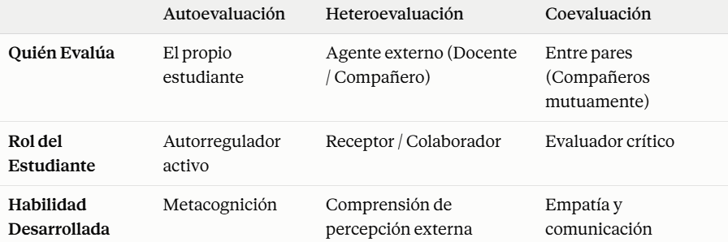

Línea de tiempo de momentos históricos de la evaluación de los aprendizajes
Un recorrido desde el origen del examen en la antigua China hasta la evaluación holística, formativa y por competencias que conocemos hoy.
Tipos de evaluación: momentos y agentes evaluadores
Dos tablas comparativas que resumen, por un lado, el "cuándo" y el "para qué" de la evaluación diagnóstica, formativa y sumativa; y por otro, "quién evalúa" en la autoevaluación, la heteroevaluación y la coevaluación.
¿Cuándo se evalúa? Diagnóstica, formativa y sumativa

¿Quién evalúa? Autoevaluación, heteroevaluación y coevaluación

Aunque la evaluación sumativa es la más común en la práctica, la investigación educativa lleva décadas demostrando que la formativa tiene mayor impacto en el aprendizaje real.
Video: técnicas e instrumentos para evaluar los aprendizajes
Un video que complementa la teoría con ejemplos prácticos de técnicas e instrumentos de evaluación aplicables en el aula.

Ficha técnica: guía de entrevista semiestructurada
Diseño de un instrumento de evaluación: una guía de entrevista semiestructurada para conocer la adaptación de los estudiantes al primer semestre universitario.
Cuestionario Semi-Estructurado
La guía de entrevista es un instrumento que contiene las preguntas y los temas que orientan la conversación. Permite organizar la información que se quiere obtener.
Marco normativo: Decreto 1290 de 2009
El decreto colombiano que reglamenta la evaluación del aprendizaje y la promoción de los estudiantes en los niveles de educación básica y media.
Decreto 1290 de 2009 (Abril 16)
"Por el cual se reglamenta la evaluación del aprendizaje y promoción de los estudiantes de los niveles de educación básica y media." Establece los ámbitos, propósitos y componentes del sistema institucional de evaluación en Colombia.
Consultar el decreto completo